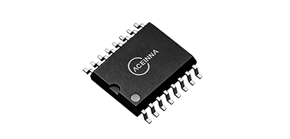
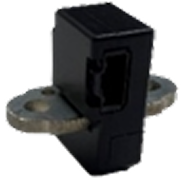
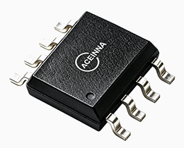
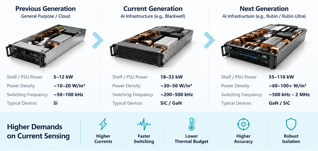
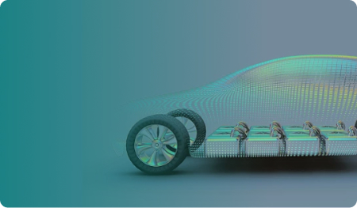
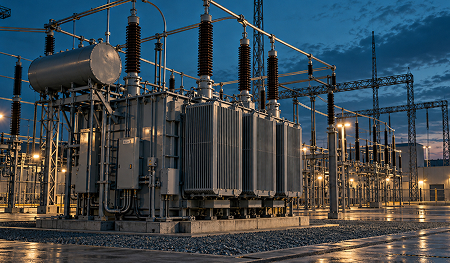

Current Sensor ICs
Integrated isolated current-sensing ICs for power conversion, control, monitoring and protection.
View Current Sensor ICs

View All Current Sensors

View Current Sensor ICs

View High Current Modules

View Field Current Sensors

Years
xMR Sensors
Up to
Up to
Up to
Response Time


View All Solutions
Explore Solutions

Explore Solutions
Explore Solutions

Explore Solutions
Get Support

Browse Current Sensor Resources

View Quality Resources

Contact Sales